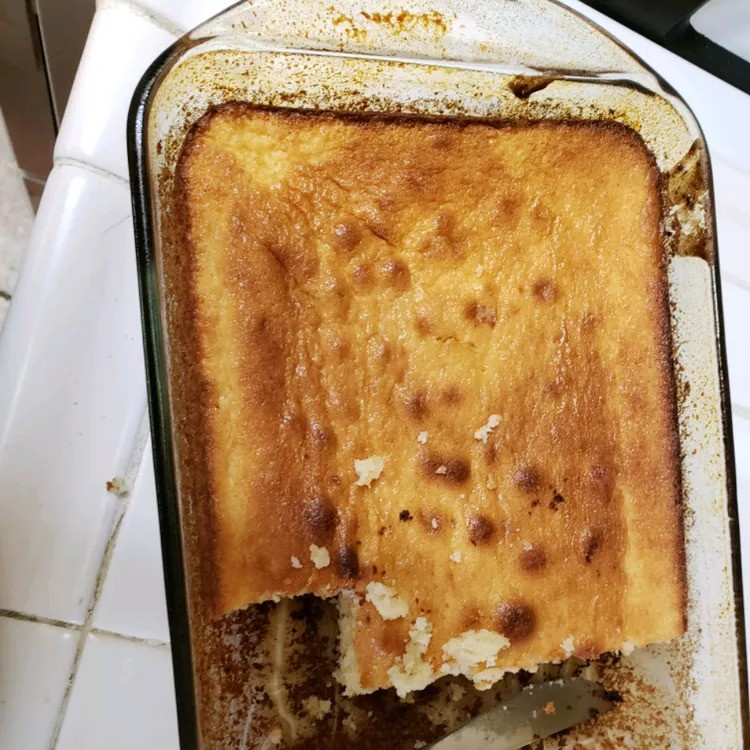

Honduran Quesadillas

Traditional Honduran cake made of cheese, eaten during Christmas. From Honduras, Central America.
Ingredients
- 1 ½ cups margarine
- 3 cups white sugar
- 2 cups sifted all-purpose flour
- 1 cup rice flour
- 1 tablespoon baking powder
- 6 room-temperature eggs
- 2 cups lukewarm milk
- 2 cups grated Parmesan cheese
- ½ cup white sugar
- ¼ cup all-purpose flour
- ¼ cup sesame seeds
Directions
- Preheat oven to 350 degrees F (175 degrees C). Lightly grease and flour a medium glass baking dish.
- In a bowl, beat together margarine and 3 cups sugar until fluffy. Add the eggs one at a time, mixing well. Combine 2 cups all-purpose flour, rice flour, and baking powder; add them alternately with the milk, stirring well between each addition. Slowly stir in Parmesan cheese. Transfer to the prepared baking dish.
- a small bowl, mix the 1/2 cup sugar, 1/4 cup all-purpose flour, and sesame seeds. Sprinkle evenly over the batter in the cake pan.
- Bake 45 minutes in the preheated oven, until a toothpick inserted in the center comes out clean. Cool completely, and cut into squares.